<!DOCTYPE lake>
<h1 data-lake-id="FZ3eK" id="FZ3eK"><span data-lake-id="ucfc7c535" id="ucfc7c535">关闭hyper-v和wsl</span></h1><p data-lake-id="ufbbdd998" id="ufbbdd998">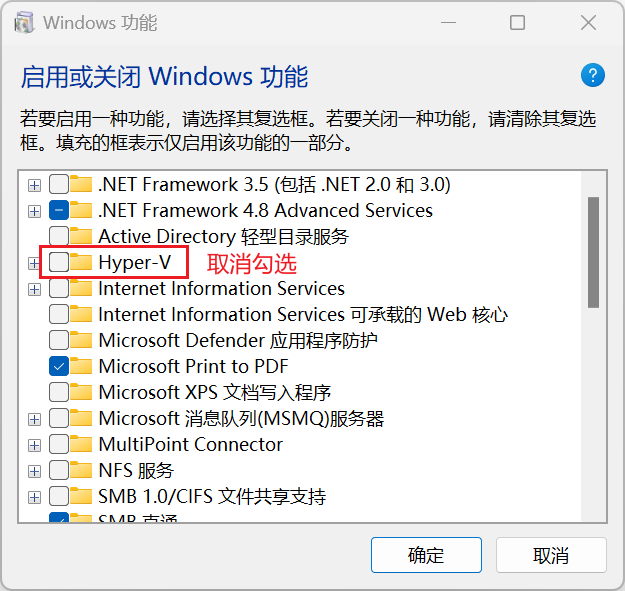</p><p data-lake-id="ua7926627" id="ua7926627">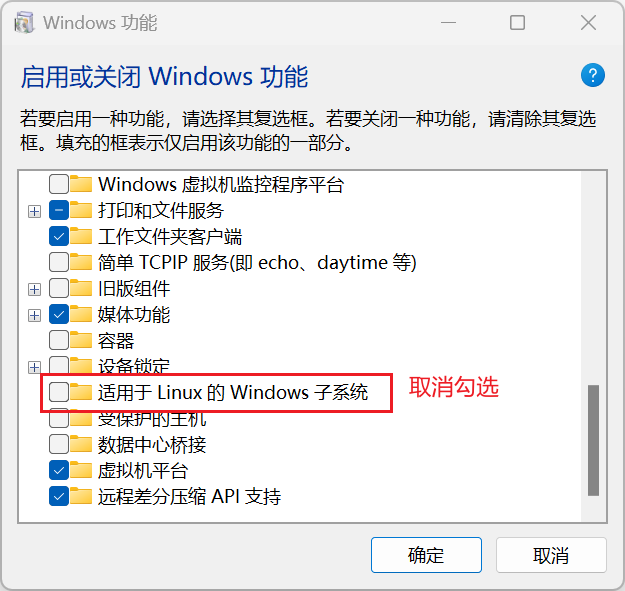</p><p data-lake-id="u9c0b234b" id="u9c0b234b"><span data-lake-id="u63fa01dd" id="u63fa01dd">点击确定,重启电脑即可</span></p><p data-lake-id="uf81093fb" id="uf81093fb">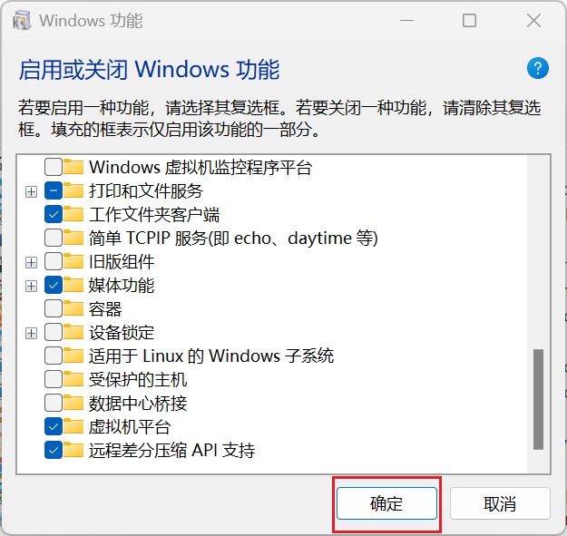</p><h2 data-lake-id="e1010848" id="e1010848"><span data-lake-id="u3e95fc5b" id="u3e95fc5b">vmware安装</span></h2><h3 data-lake-id="b4d29393" id="b4d29393"><span data-lake-id="u13da2750" id="u13da2750">1. 准备文件</span></h3><p data-lake-id="u48b9d693" id="u48b9d693"><br/></p><p data-lake-id="ub0e32629" id="ub0e32629"><span data-lake-id="uaf8e11bb" id="uaf8e11bb">双击安装文件，启动安装</span></p><p data-lake-id="ub0f212e3" id="ub0f212e3"></p><h3 data-lake-id="1b144418" id="1b144418"><span data-lake-id="u43eb5428" id="u43eb5428">2. 安装</span></h3><p data-lake-id="u5eb9ebb2" id="u5eb9ebb2"><strong><span data-lake-id="ue0ed2c1b" id="ue0ed2c1b">点击下一步</span></strong></p><p data-lake-id="u0a88eb07" id="u0a88eb07">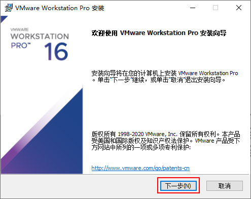</p><p data-lake-id="uf68dc12b" id="uf68dc12b"><strong><span class="lake-fontsize-12" data-lake-id="u855e8aca" id="u855e8aca" style="color: rgb(51, 51, 51)">勾选同意，点击下一步</span></strong></p><p data-lake-id="u2b2764e7" id="u2b2764e7"></p><p data-lake-id="ue1f1a1c7" id="ue1f1a1c7"><strong><span class="lake-fontsize-12" data-lake-id="u697927ad" id="u697927ad" style="color: rgb(51, 51, 51)">选择安装位置</span></strong></p><p data-lake-id="u683f70c9" id="u683f70c9"><strong><span class="lake-fontsize-12" data-lake-id="uf485a205" id="uf485a205" style="color: rgb(51, 51, 51)">注意：虽然安装位置可以自由选择，但是由于虚拟机对硬件要求较高，如果当前计算机有固态硬盘，建议安装到固态硬盘。</span></strong></p><p data-lake-id="u57b15ecc" id="u57b15ecc"></p><p data-lake-id="uaae715f9" id="uaae715f9"><strong><span class="lake-fontsize-12" data-lake-id="u1b73133b" id="u1b73133b" style="color: rgb(51, 51, 51)">把默认的勾选取消，点击下一步</span></strong></p><p data-lake-id="u3f608cb8" id="u3f608cb8"></p><p data-lake-id="ud182874b" id="ud182874b"><strong><span class="lake-fontsize-12" data-lake-id="u30fb7f43" id="u30fb7f43" style="color: rgb(51, 51, 51)">继续点击下一步</span></strong></p><p data-lake-id="u2123ead1" id="u2123ead1">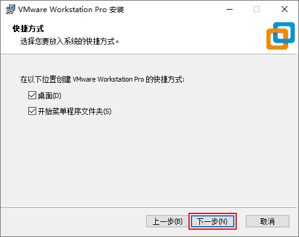</p><p data-lake-id="u70dd6156" id="u70dd6156"><strong><span class="lake-fontsize-12" data-lake-id="u854df26d" id="u854df26d" style="color: rgb(51, 51, 51)">点击安装</span></strong></p><p data-lake-id="ub14e1f08" id="ub14e1f08"></p><p data-lake-id="ud4400793" id="ud4400793"><strong><span class="lake-fontsize-12" data-lake-id="u1f315a4e" id="u1f315a4e" style="color: rgb(51, 51, 51)">等待安装结束，点击许可证</span></strong></p><p data-lake-id="u68f828eb" id="u68f828eb">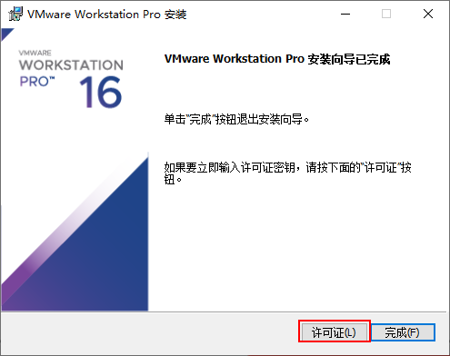</p><p data-lake-id="u19697819" id="u19697819"><strong><span class="lake-fontsize-12" data-lake-id="u2d6d1828" id="u2d6d1828" style="color: rgb(51, 51, 51)">输入许可证秘钥如下：点击输入 </span></strong></p><p data-lake-id="u30c8714f" id="u30c8714f"><span class="lake-fontsize-12" data-lake-id="u0c8eecd9" id="u0c8eecd9" style="color: rgb(51, 51, 51)">ZF3R0-FHED2-M80TY-8QYGC-NPKYF</span></p><p data-lake-id="u54b5c217" id="u54b5c217">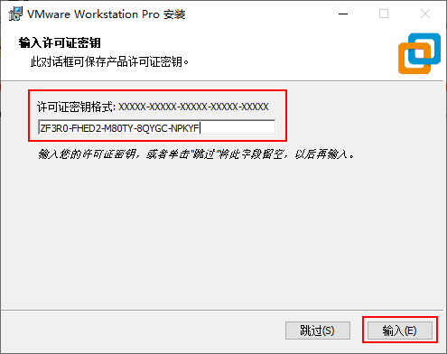</p><p data-lake-id="uf46526d5" id="uf46526d5"><strong><span class="lake-fontsize-12" data-lake-id="u7e14e713" id="u7e14e713" style="color: rgb(51, 51, 51)">点击完成，安装结束</span></strong></p><p data-lake-id="u54a87609" id="u54a87609"></p><p data-lake-id="u7a78270e" id="u7a78270e"><strong><span class="lake-fontsize-12" data-lake-id="ue2bcebd8" id="ue2bcebd8" style="color: rgb(51, 51, 51)">VMware安装完成需要重启计算机才能正常使用，可选择立即重启或稍后手动重启</span></strong></p><p data-lake-id="uad964702" id="uad964702"></p><h2 data-lake-id="Cd1rI" id="Cd1rI"><span data-lake-id="u35b91f33" id="u35b91f33" style="color: rgb(51, 51, 51)">导入ubuntu虚拟机</span></h2><h3 data-lake-id="GvjUF" id="GvjUF"><span data-lake-id="u1b94aa60" id="u1b94aa60" style="color: rgb(51, 51, 51)">1. 准备文件</span></h3><p data-lake-id="u43d6bbe3" id="u43d6bbe3"><span class="lake-fontsize-12" data-lake-id="u1ffcec5e" id="u1ffcec5e" style="color: rgb(51, 51, 51)">解压ubuntu虚拟机压缩文件(ubuntu22.zip)到非中文非空格目录下</span></p><p data-lake-id="uc71885a6" id="uc71885a6"><strong><span class="lake-fontsize-12" data-lake-id="u40b19fdd" id="u40b19fdd" style="color: rgb(51, 51, 51)">注意：虚拟机镜像文件夹会占用计算机40GB左右的硬盘空间，如果计算机配置有固态硬盘且空间充裕，建议将虚拟机文件夹放置在固态硬盘，这样能极大提升虚拟机运行的流畅度。</span></strong></p><h3 data-lake-id="HA328" id="HA328"><span data-lake-id="u25c3b95a" id="u25c3b95a" style="color: rgb(51, 51, 51)">2. 导入</span></h3><p data-lake-id="u03055b14" id="u03055b14"><strong><span class="lake-fontsize-12" data-lake-id="u71bedbf5" id="u71bedbf5" style="color: rgb(51, 51, 51)">打开VMware，界面如下：</span></strong></p><p data-lake-id="u76df7d10" id="u76df7d10"></p><p data-lake-id="uf5053a6f" id="uf5053a6f"><strong><span class="lake-fontsize-12" data-lake-id="ue5ada713" id="ue5ada713" style="color: rgb(51, 51, 51)">点击打开虚拟机，找到解压的Ubuntu22.04镜像文件夹，选择ubunt 64位.vmx文件，点击打开</span></strong></p><p data-lake-id="uc369396a" id="uc369396a">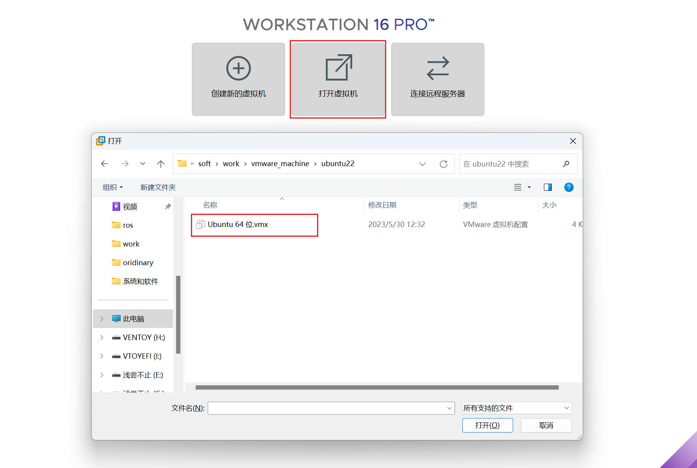</p><p data-lake-id="ucdd1f235" id="ucdd1f235"><strong><span class="lake-fontsize-12" data-lake-id="u78ec5571" id="u78ec5571" style="color: rgb(51, 51, 51)">由于虚拟机对内存容量和CPU数量要求较高，所以在打开虚拟机之前需要根据计算机硬件对分配给虚拟机的内存和CPU数量进行设置。如果计算机配置较高，即物理内存大于等于8G，CPU大于等于四核八线程，分配给虚拟机的内存设置为4GB即可，CPU内核总数设置为4个即可；如果计算机配置较低，分配给虚拟机的内存设置为2GB，CPU内核总数设置为1个。</span></strong></p><p data-lake-id="u5abc49fc" id="u5abc49fc"><strong><span class="lake-fontsize-12" data-lake-id="u079f6cc3" id="u079f6cc3" style="color: rgb(51, 51, 51)">​</span></strong><br/></p><p data-lake-id="uc824cbfa" id="uc824cbfa"><strong><span class="lake-fontsize-12" data-lake-id="uc4b3af62" id="uc4b3af62" style="color: rgb(51, 51, 51)">修改虚拟机内存:</span></strong></p><p data-lake-id="uf469f630" id="uf469f630"></p><p data-lake-id="u4a6f82a0" id="u4a6f82a0"><strong><span class="lake-fontsize-12" data-lake-id="ua7951c7d" id="ua7951c7d" style="color: rgb(51, 51, 51)">修改虚拟机CPU核心数:</span></strong></p><p data-lake-id="u40cb6dbb" id="u40cb6dbb"></p><p data-lake-id="u4b976b29" id="u4b976b29"><strong><span class="lake-fontsize-12" data-lake-id="u3badaffc" id="u3badaffc" style="color: rgb(51, 51, 51)">禁用侧通道缓解</span></strong></p><p data-lake-id="ucd1e269b" id="ucd1e269b">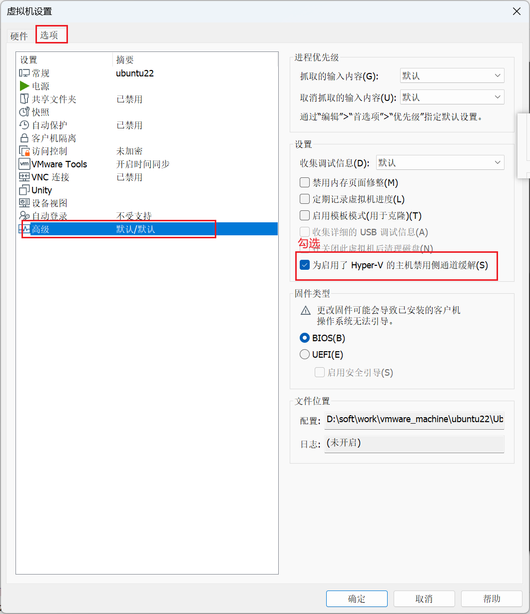</p><p data-lake-id="u4789654b" id="u4789654b"><strong><span class="lake-fontsize-12" data-lake-id="ueb5372f9" id="ueb5372f9" style="color: rgb(51, 51, 51)">设置完毕之后即点击开启此虚拟机可打开虚拟机，第一次打开虚拟机，速度会比较慢，需要耐心等待</span></strong></p><p data-lake-id="uf7b42570" id="uf7b42570"></p><p data-lake-id="u9cb1c816" id="u9cb1c816"><strong><span class="lake-fontsize-12" data-lake-id="u6d2aa15f" id="u6d2aa15f" style="color: rgb(51, 51, 51)">注意：如果打开虚拟机的时候报CPU不支持虚拟化的错误，这个某些品牌的计算机的出厂设置有关，需要进入BIOS将CPU虚拟化选项打开，不同品牌的计算机BIOS都不相同，如果遇到这个问题，可以根据计算机型号百度解决方案</span></strong></p><p data-lake-id="u32fd5b54" id="u32fd5b54"><strong><span class="lake-fontsize-12" data-lake-id="uf8f662a3" id="uf8f662a3" style="color: rgb(51, 51, 51)">出现如下界面，点击头像，输入密码：123</span></strong></p><p data-lake-id="uc75573a6" id="uc75573a6">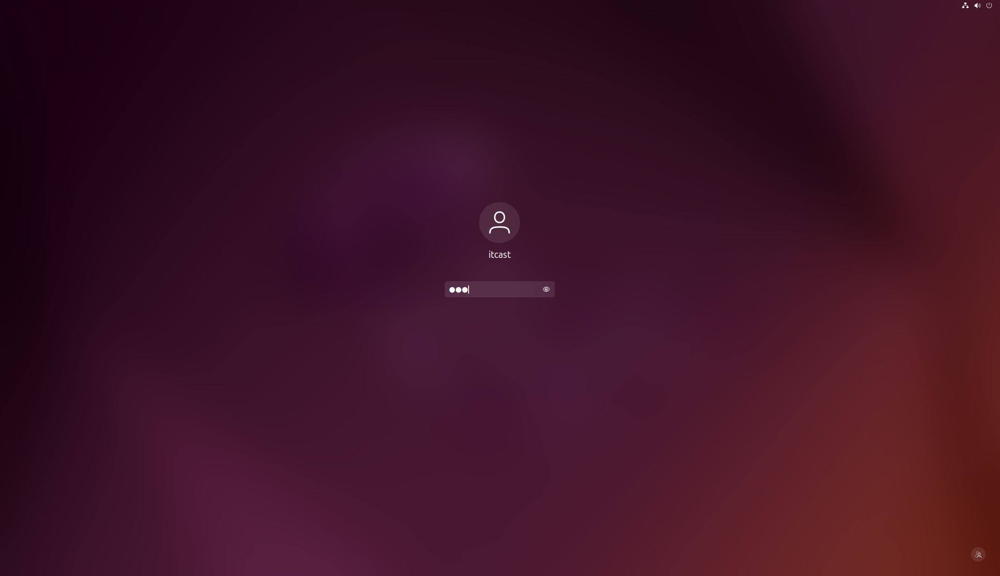</p><p data-lake-id="u77c835e9" id="u77c835e9"><strong><span class="lake-fontsize-12" data-lake-id="u410a43a1" id="u410a43a1" style="color: rgb(51, 51, 51)">出现如下界面，表明虚拟机导入并打开成功</span></strong></p><p data-lake-id="u1ed185b8" id="u1ed185b8">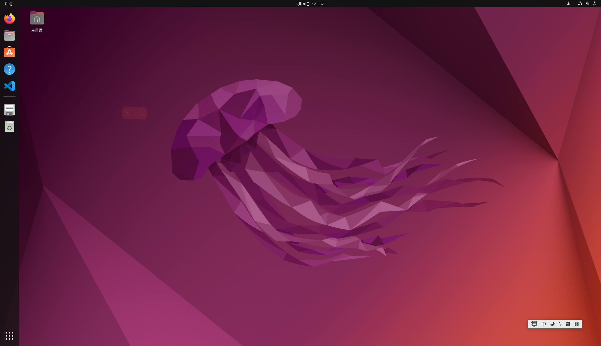</p><p data-lake-id="u642c1c7e" id="u642c1c7e"><br/></p><h2 data-lake-id="C1Sjm" id="C1Sjm"><span data-lake-id="u61625fe0" id="u61625fe0">问题处理</span></h2><p data-lake-id="u0bce0c1b" id="u0bce0c1b"><span data-lake-id="u4246082f" id="u4246082f">如果分辨率不能随窗口变化，或者不能和windows拖拽文件，可执行如下命令解决：</span></p><span class="yuque-card-unsupported">[codeblock]</span>